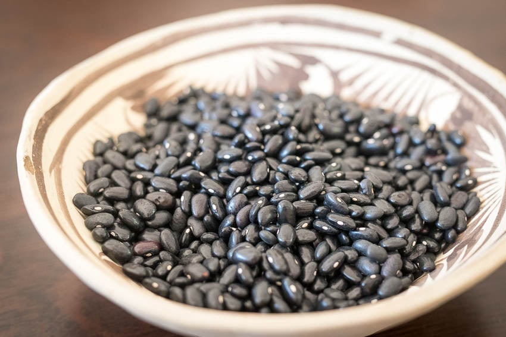

Black Beans

Rancho Gordo Magical Black Beans
These might be the most surprising, yet simple black beans I
have ever laid my hands on. If you didn't know,
dried black beans lend themselves to a much firmer texture that is
packed with flavor. Cook the beans with a simple
mirepoix and you'll be glad you did. The best part - you don't even need to soak them!
I stumbled on Rancho Gordo
at a local grocery store in the Fishtown section of Philadelphia called
Riverwards Produce. This recipe is adapted
directly from Rancho Gordo and I'll never make them another way.
Ingredients:
- 1/2 cup onions
- 1/2 cup celery
- 1/2 cup carrots
- 1 garlic clove
- 2 tbsp olive oil
- 1 cup of dried black beans
- salt to taste
- optional: flavored stock
Directions:
- Check beans for any debris and rinse well.
- Heat saute pan with olive oil over medium-heat and saute onions, celery, carrots, and garlic.
- Once vegetables are soft, add dried beans and enough water [or stock] to cover beans by about 2 inches.
- Bring the pot to a rapid boil for 10 to 15 minutes.
- Reduce head to a gentle simmer and cook, uncovered for 1 to 3 hours. If the bean-cooking water starts to get low, add hot water directly from a kettle.
- Salt the beans once they are just starting to turn soft.
Adapted from Rancho Gordo.